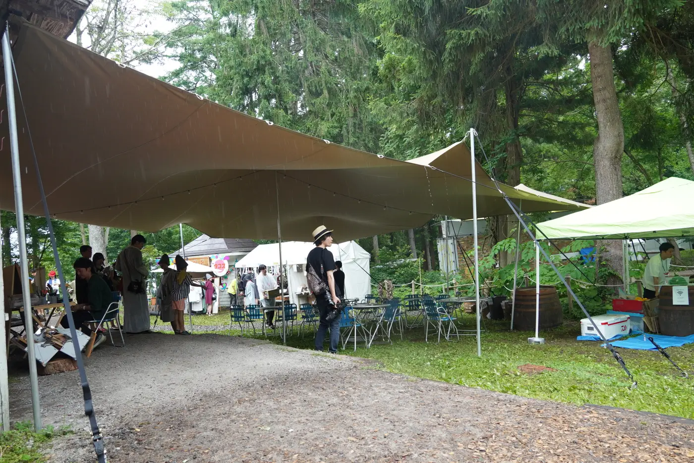
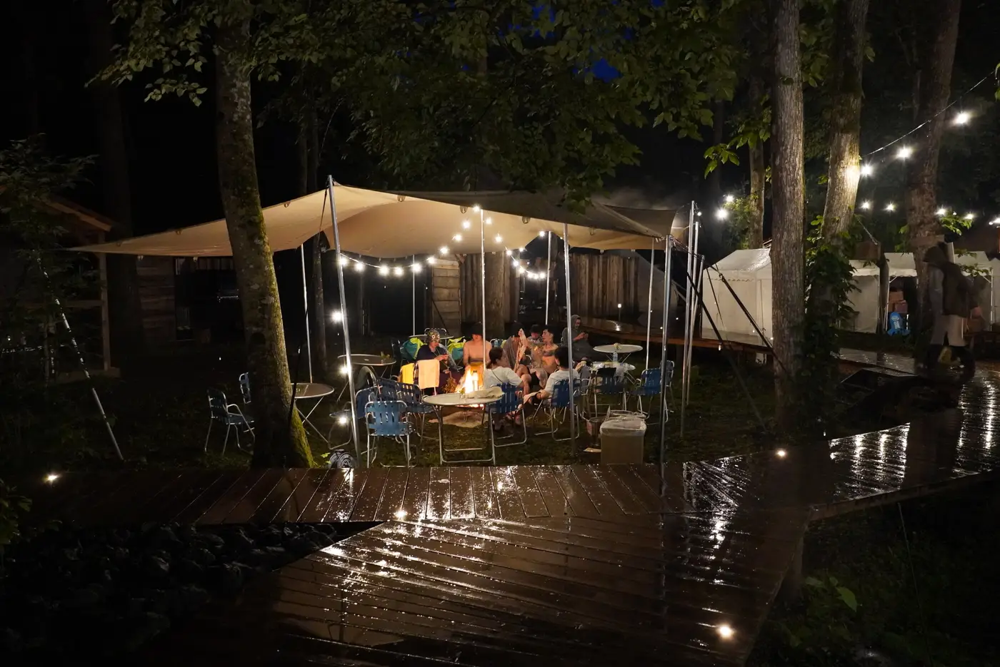
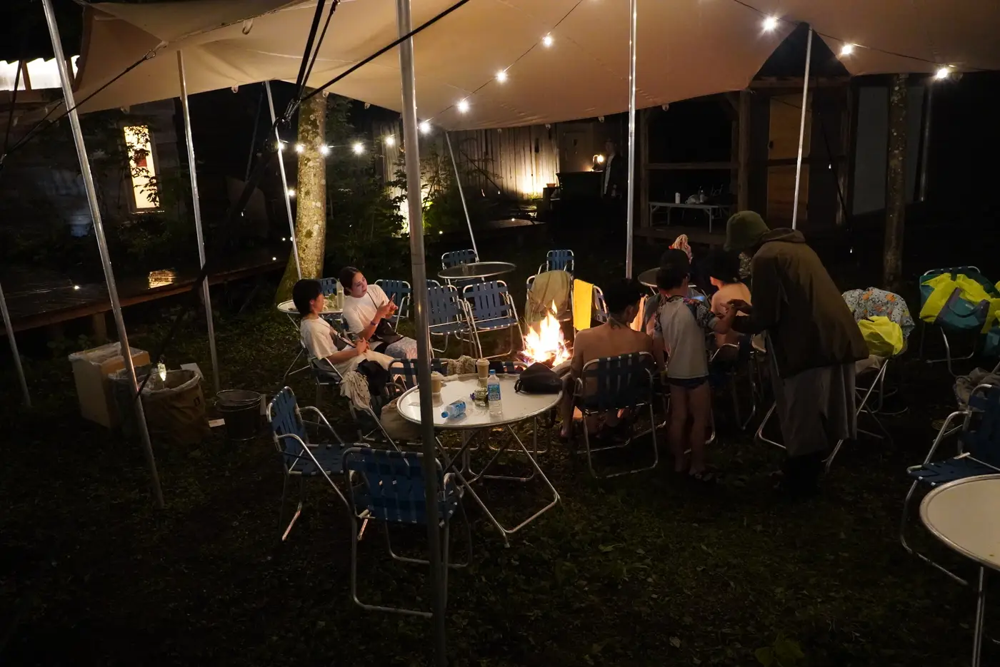
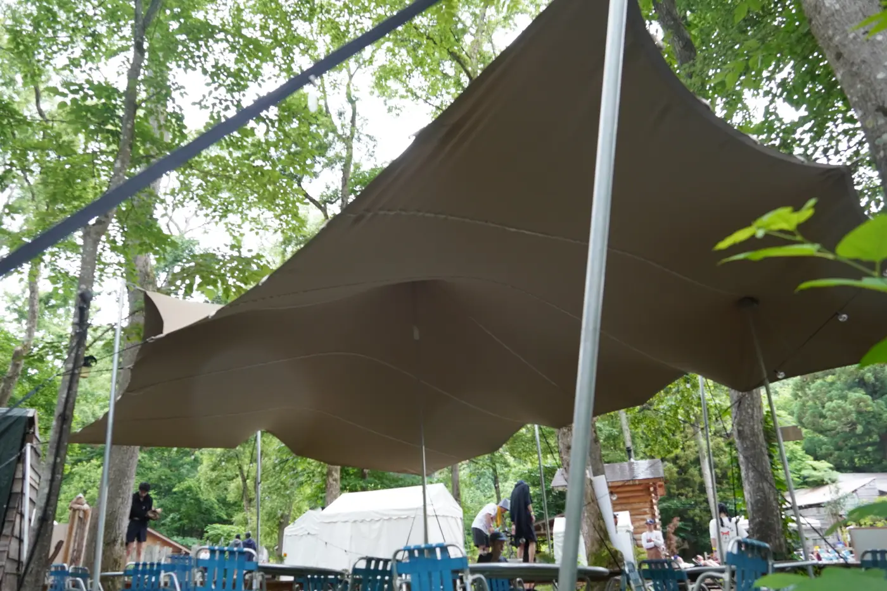

OVERVIEW
事例のまとめ
| イベント | 野尻湖 LAMP フェス |
|---|---|
| 場所 | 長野県・野尻湖（森の中の会場） |
| テント | L サイズ（10m×20m）・M サイズ（10m×8m）・S サイズ（8m×6m）を1張りずつ |
| 使い方 | メイン会場、サウナのエリア、芝生のサイレントディスコ |
| 回数 | 2024年・2025年・2026年の3年連続 |
大・中・小の3張りを、場所に合わせて
会場の広さと使い方に合わせて、大きさのちがう3つのテントを張りました。人がいちばん集まるメイン会場には L サイズ（10m×20m）、奥のサウナのエリアには S サイズ（8m×6m）、さらに奥の芝生で行うサイレントディスコ（ヘッドホンで音楽を聴きながら踊るイベント）には M サイズ（10m×8m）。ひとつの会場の中で、場所ごとにちょうどいい大きさを選べるのも、サイズのそろったストレッチテントの良さです。
森の木々を生かして張る
会場は、木々が立ち並ぶ森の中。ストレッチテントは柱の位置を自由に決められるので、木をよけながら、デッキや砂利の通路の上に屋根をかけられます。森の景色をこわさずに、雨と日差しから人を守ります。
夜は、明かりの灯る居場所に
日が暮れると、テントに電球を灯し、森の中に温かい居場所が生まれます。布がやわらかく光を受け止めるので、強い照明を使わなくても、落ち着いた明るさになります。
3年連続で選ばれています
2024年・2025年・2026年と、3年続けて設営しています。自然の中のフェスと、曲線を描くストレッチテントの相性のよさが、続けて選ばれている理由のひとつです。
PHOTOS





FOR YOUR EVENT
こんなイベントにおすすめです。
- 森やキャンプ場での野外フェス
- サウナやサイレントディスコなど、エリアの分かれたイベント
- 昼から夜まで続く音楽イベント
会場の広さや地面、使い方をお聞かせください。似た条件の事例をもとに、テントの大きさと張り方をご提案します。あわせて サイズ・収容人数、設営の流れ、ほかの施工事例 もご覧ください。